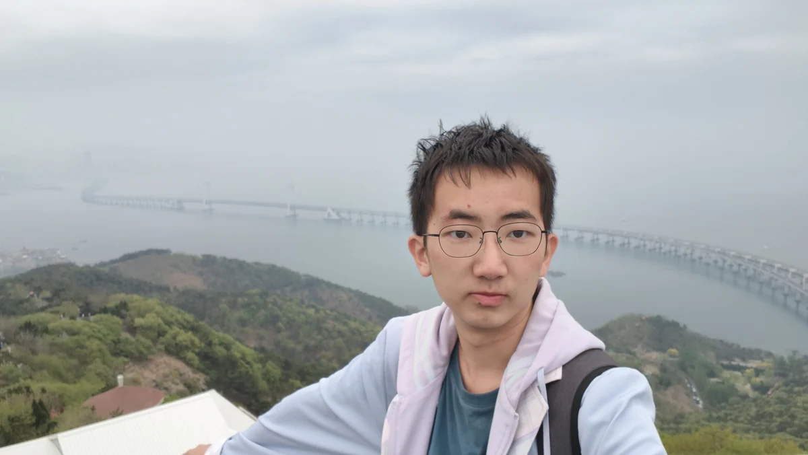

01 / FIELD NOTES2026.06 —
ATEC 2026 · 清华青云战队
机器人走向真实世界
在 Tron2、PiperX 机械臂与多传感器组成的系统上，探索越野移动与垃圾拾取。我的工作连接仿真训练、感知、抓取与真实硬件。
我做了什么
- 用 IsaacLab 开展双足运动控制仿真训练，参与仿真到实机迁移。
- 部署 AnyGrasp，完成 RealSense 标定及抓取系统集成。
- 基于 YOLO 与反投影开展 RGB-D 边界线识别，参与结构件制作、装机与故障排查。
清华大学 · 无穹书院
以兴趣始，以毅力终。
我是一名关注具身智能的本科生，喜欢各种各样奇怪和不奇怪的机器人，让软件与硬件协同工作。从自制 VR 手套到双足机器人，我在一次次搭建、调试与比赛中探索工程的可能。

01 / SELECTED WORK
从交互原型，到真实环境中的机器人。
ATEC 2026 · 清华青云战队
在 Tron2、PiperX 机械臂与多传感器组成的系统上，探索越野移动与垃圾拾取。我的工作连接仿真训练、感知、抓取与真实硬件。
The Last Note · Virtualoculus
从 ESP32 和陀螺仪出发，自制 VR 眼镜与“魔法手套”，在 Unity ARPG 中实现画符施法。让代码和硬件共同创造一种新的交互方式。
第五届机器狗大赛 · Dogdog
面向小米 Cyberdog2 的 2v2 足球任务，把动作捕捉、通信、导航与攻防状态机连接起来，探索多机器人协作。
MY TOOLKIT
我更关心工具如何一起工作，最终让系统完成任务。
IsaacLab · RL training
AnyGrasp · RGB-D · RealSense · YOLO
ROS2 · Tron2 · PiperX · ESP32 · 3D printing · SolidWorks
Python · C++ · C · C# · Unity · Git
02 / EXPERIENCE
无穹书院 · 本科在读
2025.08 — 至今
第一学年 GPA
线性代数、程序设计基础、面向对象程序设计及智能机器人探索与实践：4.0。
ATEC 核心技术成员，参与机器人实机调试、运动控制训练与抓取部署。
支队长兼宣传负责人。统筹策划、团队分工、外联、行前答辩和带队出访；支队获书院实践二等奖。
担任无穹51宣传委员，累计制作推送与视频50余篇（部）；现任班级科创委员、书院科协赛事部部长。参与校级甲级团支部建设。
在 IMMC 数学建模大赛中担任队长、主笔与算法设计者，累计获得四次特等入围奖。
RECOGNITION
03 / BEYOND THE LAB
和人一起做事，是工程的另一部分。
带领港新实践支队走访高校与企业，参与南洋理工大学 TAISP 回访接待和技术分享。也在深圳、天津的实践与“清怀小院”项目中，继续观察技术之外的真实需求。
书院足球队主力中后卫，随队进入马约翰杯丙组八强；参加班际足球赛，也解说马杯决赛。协作、判断和承担责任，同样发生在绿茵场上。
LET’S BUILD SOMETHING
对机器人运动控制、操纵算法与集群智能系统工程等方面感兴趣，渴望从零开始设计一款有创意的机器人和model。欢迎交流科研机会、工程项目和有意思的问题。
tbm25@mails.tsinghua.edu.cn